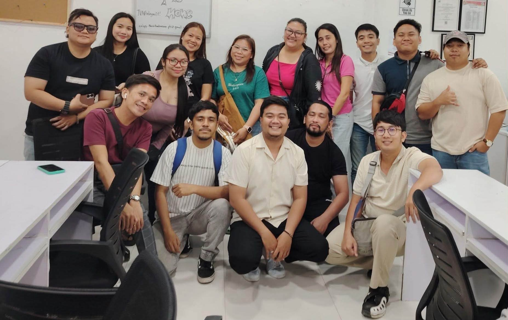

Local roots
The business is based in Balayan, Batangas, Philippines, and welcomes online inquiries.
The Virtual Answer is a virtual assistance service based in Balayan, Batangas. Our aim is simple: make it easier for businesses to get thoughtful support with recurring work.

Every business has its own rhythm. Before suggesting support, we want to understand the tasks, tools, communication style, and outcomes that matter to you.
We believe remote support works best when the business and assistant understand the task, the expected result, and how they will communicate. The process starts with listening—not a one-size-fits-all package.
Clear expectations and respect for people help create better working relationships.
The business is based in Balayan, Batangas, Philippines, and welcomes online inquiries.
We focus on work that can be clearly explained, handed off, and reviewed.
People, privacy, and clear expectations belong at the center of a working relationship.
Tell us a little about your business and the work you’d like help with.